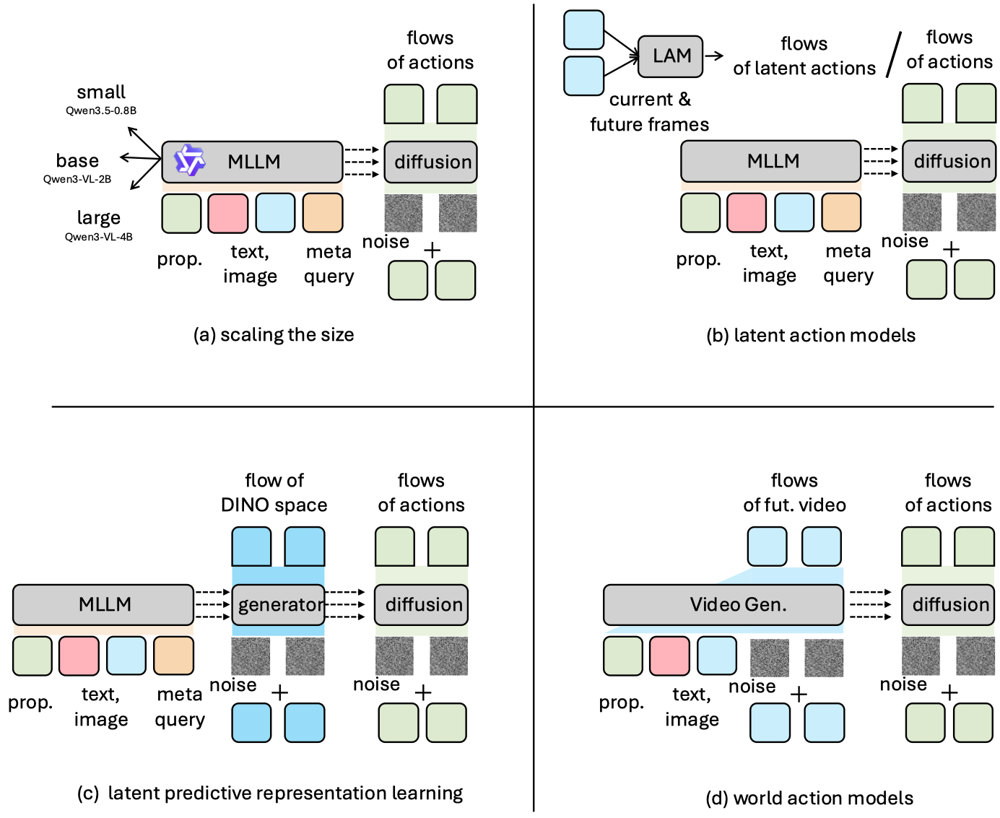

VLANeXt: Recipes for Building Strong VLA Models
A unified design study distilling more than 500 experiments into 12 findings and the base VLANeXt model.
A systematic study of vision-language-action models
From Core Recipes to Emerging Paradigms
Two connected papers. One shared framework for studying and building strong VLA models.
A unified design study distilling more than 500 experiments into 12 findings and the base VLANeXt model.
Five new variants test the core recipe across model scaling, latent-action pretraining, latent predictive representation learning, and world action modeling.
1 S-Lab, Nanyang Technological University2 Sun Yat-sen University3 Shanghai Jiao Tong University4 SenseTime Research5 ACE Robotics
* Corresponding author: Chen Change Loy
One research trajectory
Which VLA design choices matter, and do they remain effective as the field evolves? We study both questions under a unified training and evaluation framework, from a simple RT-2-style baseline to six VLANeXt variants.

01 · Establish the recipe
The ICML study examines foundational components, perception essentials, and action modeling perspectives. Their combination yields the original VLANeXt, now the Base model of the family.
Explore the core recipe02 · Test its generality
The extended study explores model scaling, latent-action pretraining, latent predictive representation learning, and world action modeling. Controlled ablations examine whether the same recipe remains useful in each setting.
Meet the family03 · Build on shared foundations
Both papers share a model implementation, training entry point, and evaluation pipeline. Configuration files select the backbone and learning objectives.
Models and configurationsVLANeXt · ICML 2026
Multi-view images, language instructions, and proprioception enter a multimodal backbone. Learnable meta queries softly connect it to a dedicated policy module, which predicts action chunks with flow matching and frequency-domain regularization.

A deeper policy module, action chunking, a strong VLM, and soft layer-wise connections provide the foundation. Flow matching models continuous action distributions.
Third-person and wrist views improve robustness. Proprioception is most effective when conditioned in the VLM; simply adding past images does not improve this setup.
A frequency-domain loss regularizes action trajectories with little overhead. Auxiliary future-image prediction helps, but is left out of Base because it nearly triples training cost.
Success rates (%) on the Spatial suite. Each block varies one design aspect along the exploration trajectory. These are Spatial results, distinct from the four-suite benchmark averages below.
| Design / variant | LIBERO | LIBERO-plus · unseen perturbations | |||||||
|---|---|---|---|---|---|---|---|---|---|
| Original | Camera | Robot | Language | Light | Background | Noise | Layout | Total ↑ | |
| Foundational components · RT-2-style baseline | |||||||||
| Baseline | 19.8 | - | - | - | - | - | - | - | < 5.0 |
| Policy module design | |||||||||
| Baseline | 19.8 | - | - | - | - | - | - | - | < 5.0 |
| Separate Head | 30.2 | 0.8 | 10.0 | 31.0 | 15.4 | 24.8 | 4.0 | 30.1 | 16.6 |
| Large Policy Module | 64.4 | 0.5 | 12.6 | 79.7 | 34.6 | 32.9 | 8.5 | 63.1 | 34.0 |
| Action chunking horizon | |||||||||
| Action Chunk 1 | 64.4 | 0.5 | 12.6 | 79.7 | 34.6 | 32.9 | 8.5 | 63.1 | 34.0 |
| Action Chunk 4 | 75.4 | 5.3 | 28.0 | 67.9 | 42.5 | 50.4 | 14.8 | 70.4 | 40.0 |
| Action Chunk 8 | 74.6 | 5.6 | 26.0 | 85.6 | 56.8 | 55.8 | 11.7 | 63.9 | 43.4 |
| Action learning objective | |||||||||
| bin Classification | 74.6 | 5.6 | 26.0 | 85.6 | 56.8 | 55.8 | 11.7 | 63.9 | 43.4 |
| VQ-VAE Classification | 58.8 | 3.2 | 44.3 | 67.2 | 42.5 | 43.8 | 7.1 | 48.3 | 36.5 |
| Regression | 85.4 | 5.1 | 32.3 | 90.5 | 62.7 | 68.6 | 7.7 | 75.6 | 48.4 |
| DDIM | 80.0 | 4.8 | 52.6 | 80.3 | 70.5 | 55.4 | 9.4 | 68.3 | 48.3 |
| Flow Matching | 80.0 | 7.2 | 34.6 | 79.2 | 46.9 | 57.8 | 11.1 | 77.4 | 45.0 |
| VLM backbone capacity | |||||||||
| Paligemma | 69.8 | 1.1 | 17.1 | 32.1 | 22.9 | 32.6 | 2.8 | 24.9 | 18.9 |
| LLaMA3.2 + SigLip | 80.0 | 7.2 | 34.6 | 79.2 | 46.9 | 57.8 | 11.1 | 77.4 | 45.0 |
| Qwen3VL-2B | 90.0 | 9.6 | 42.0 | 74.6 | 75.0 | 68.6 | 27.9 | 83.6 | 53.7 |
| Qwen3VL-4B | 95.8 | 12.2 | 66.0 | 93.3 | 89.0 | 81.0 | 29.9 | 88.6 | 64.8 |
| VLM-policy connection | |||||||||
| Loose Connection | 90.0 | 9.6 | 42.0 | 74.6 | 75.0 | 68.6 | 27.9 | 83.6 | 53.7 |
| Tight Connection | 90.0 | 14.4 | 51.7 | 81.0 | 68.5 | 67.8 | 25.1 | 82.1 | 55.4 |
| Soft Connection | 91.8 | 11.8 | 58.3 | 89.2 | 72.9 | 74.4 | 19.9 | 72.5 | 56.2 |
| Perception essentials · temporal observation history | |||||||||
| Current Frame Image | 91.8 | 11.8 | 58.3 | 89.2 | 72.9 | 74.4 | 19.9 | 72.5 | 56.2 |
| Temporal Observation History | 85.0 | 7.2 | 68.6 | 51.5 | 65.8 | 62.0 | 20.8 | 80.8 | 50.2 |
| Camera views | |||||||||
| Third-person camera view | 91.8 | 11.8 | 58.3 | 89.2 | 72.9 | 74.4 | 19.9 | 72.5 | 56.2 |
| Multiview (third-person + wrist) | 97.6 | 64.9 | 54.0 | 91.8 | 97.7 | 93.0 | 85.5 | 90.1 | 80.5 |
| Proprioception conditioning | |||||||||
| No Proprioception Input | 97.6 | 64.9 | 54.0 | 91.8 | 97.7 | 93.0 | 85.5 | 90.1 | 80.5 |
| Proprioception to VLM | 98.0 | 87.2 | 62.2 | 86.2 | 98.3 | 93.8 | 92.0 | 96.6 | 87.7 |
| Proprioception to Policy | 96.2 | 62.8 | 69.1 | 92.3 | 92.5 | 96.5 | 87.2 | 88.3 | 83.4 |
| Proprioception to VLM & Policy | 97.6 | 77.9 | 73.4 | 82.3 | 90.1 | 94.6 | 90.6 | 88.8 | 84.8 |
| Proprioception projector | |||||||||
| Linear Projector | 98.0 | 87.2 | 62.2 | 86.2 | 98.3 | 93.8 | 92.0 | 96.6 | 87.7 |
| Transformer Projector | 96.4 | 96.8 | 58.0 | 84.6 | 95.2 | 98.8 | 96.9 | 93.3 | 88.8 |
| Transformer Projector & MAE | 97.0 | 91.1 | 51.1 | 89.9 | 72.8 | 86.9 | 78.7 | 85.6 | 78.9 |
| Action modeling · world modeling perspective | |||||||||
| Normal | 98.0 | 87.2 | 62.2 | 86.2 | 98.3 | 93.8 | 92.0 | 96.6 | 87.7 |
| World Modelling | 98.0 | 94.4 | 80.3 | 76.9 | 99.7 | 98.8 | 93.2 | 93.2 | 90.3 |
| Time-series forecasting perspective | |||||||||
| Normal | 98.0 | 87.2 | 62.2 | 86.2 | 98.3 | 93.8 | 92.0 | 96.6 | 87.7 |
| Frequency Domain Loss | 99.0 | 95.7 | 78.6 | 86.9 | 99.7 | 98.8 | 98.0 | 96.6 | 93.1 |
“—” or “-” denotes an unreported result. Values follow Table I of the extended paper.
VLANeXt Family · Extended study
The Family study asks whether the core recipe remains effective across model-capacity priors, action-like priors, semantic priors, and world-dynamics priors.

Apply the recipe to Qwen3.5-0.8B, Qwen3-VL-2B, and Qwen3-VL-4B backbones. The remaining architecture and training recipe are shared.
Learn latent actions from current and future frames with a VQ-VAE. Pretrain on those visual transitions, then fine-tune on labeled robot actions.
Predict future DINOv3 features alongside actions. The best evaluated variant predicts the observation at the end of the current action horizon.
Replace the VLM with a pretrained Wan video-generation backbone and jointly learn video and actions. The fast connection transfers predictive priors without direct action attention to future video tokens.
Models and configurations
Success rates (%) averaged over Spatial, Object, Goal, and Long. Backbone names follow the released configurations.
| Model | Backbone | Focus | LIBERO avg. ↑ | Configuration |
|---|---|---|---|---|
| VLANeXt-S | Qwen3.5-0.8B | Model scaling · small | 96.7 | YAML ↗ |
| VLANeXt (Base / B) | Qwen3-VL-2B | Core recipe · ICML 2026 | 97.4 | YAML ↗ |
| VLANeXt-L | Qwen3-VL-4B | Model scaling · large | 98.4 | YAML ↗ |
| VLANeXt-LAM | Qwen3-VL-2B | Latent-action pretraining | 97.6 | YAML ↗ |
| VLANeXt-JEPA | Qwen3-VL-2B | Latent predictive representation learning | 97.7 | YAML ↗ |
| VLANeXt-WAM | Wan2.2-TI2V-5B | World action modeling | 98.2 | YAML ↗ |
VLANeXt (Base / B) is the original ICML model. The five additional variants are introduced in the extended paper. Backbone sizes are not total model parameter counts.
Controlled evaluation
Removing core ingredients reduces performance in every reported Family ablation.
Table V · Emerging paradigms
LIBERO four-suite average success rate (%). Parentheses show the change in percentage points relative to each variant’s full recipe.
| Model | Backbone | Full recipe ↑ | w/o Chunking | w/o Multi-view | w/o Flow | w/o Prop. | w/o Freq. |
|---|---|---|---|---|---|---|---|
| VLANeXt-S | Qwen3.5-0.8B | 96.7 | 88.7 (-8.0) | 89.9 (-6.8) | 94.0 (-2.7) | 95.8 (-0.9) | 96.6 (-0.1) |
| VLANeXt-L | Qwen3-VL-4B | 98.4 | 93.2 (-5.2) | 94.6 (-3.8) | 96.6 (-1.8) | 96.8 (-1.6) | 97.1 (-1.3) |
| VLANeXt-LAM | Qwen3-VL-2B | 97.6 | 87.8 (-9.8) | 85.8 (-11.8) | 93.2 (-4.4) | 94.6 (-3.0) | 95.3 (-2.3) |
| VLANeXt-JEPA | Qwen3-VL-2B | 97.7 | 91.2 (-6.5) | 93.3 (-4.4) | 96.7 (-1.0) | 95.9 (-1.8) | 95.5 (-2.2) |
| VLANeXt-WAM | WAN2.2-5B | 98.2 | 94.1 (-4.1) | 89.9 (-8.3) | 96.0 (-2.2) | 97.6 (-0.6) | 98.0 (-0.2) |
Full recipe Chunking: action chunking · Flow: flow matching · Prop.: proprioception · Freq.: frequency-domain loss.
VQ-VAE reaches 97.6%, while training the action-only baseline for the same total number of steps reaches 97.0%. Longer training alone does not explain the improvement.
| Model | LAM constraint | Pretrain steps | Fine-tune steps | Spatial | Object | Goal | Long | Average ↑ |
|---|---|---|---|---|---|---|---|---|
| VLANeXt | — | — | 10k | 99.0 | 99.2 | 96.6 | 94.8 | 97.4 |
| VLANeXt · matched duration | — | — | 30k | 98.8 | 98.8 | 96.2 | 94.0 | 97.0 |
| VLANeXt-LAM | VICReg | 20k | 10k | 95.4 | 99.6 | 97.0 | 95.4 | 96.9 |
| VLANeXt-LAM | VAE | 20k | 10k | 98.0 | 97.8 | 95.2 | 96.2 | 96.8 |
| VLANeXt-LAM | VQ-VAE | 20k | 10k | 98.0 | 99.8 | 95.6 | 97.0 | 97.6 |
Predicting DINOv3 features at the end of the current action horizon reaches 97.7%, compared with 96.6% for the episode-final target and 96.4% for the Emu3.5-token objective.
| Model | Generator | Objective | Spatial | Object | Goal | Long | Average ↑ |
|---|---|---|---|---|---|---|---|
| VLANeXt | — | Action only | 99.0 | 99.2 | 96.6 | 94.8 | 97.4 |
| VLANeXt | Emu3.5 tokenizer + DiT | Action + horizon-final image | 97.6 | 99.8 | 95.4 | 92.8 | 96.4 |
| VLANeXt-JEPA | DINO encoder + DiT | Action + episode-final image | 98.0 | 99.2 | 96.4 | 93.0 | 96.6 |
| VLANeXt-JEPA | DINO encoder + DiT | Action + horizon-final image | 98.0 | 99.8 | 97.0 | 95.8 | 97.7 |
On the same Wan backbone, the action-only baseline reaches 95.6%. Joint video and action learning improves this to 98.2% with the fast connection and 97.6% with the joint connection.
| Model | Backbone | Objective | Connection | Spatial | Object | Goal | Long | Average ↑ |
|---|---|---|---|---|---|---|---|---|
| VLANeXt | Qwen3-VL-2B | Action only | — | 99.0 | 99.2 | 96.6 | 94.8 | 97.4 |
| VLANeXt-WAM | WAN2.2-5B | Action only | — | 95.0 | 99.6 | 96.4 | 91.2 | 95.6 |
| VLANeXt-WAM | WAN2.2-5B | Action & video | Fast | 97.8 | 99.4 | 99.6 | 96.0 | 98.2 |
| VLANeXt-WAM | WAN2.2-5B | Action & video | Joint | 95.2 | 99.8 | 97.0 | 98.2 | 97.6 |
We evaluate the core recipe with different backbone sizes from the Qwen3.5 and Qwen3-VL families under a shared LIBERO training and evaluation protocol.
| Backbone | Spatial | Object | Goal | Long | Average ↑ |
|---|---|---|---|---|---|
| Qwen3.5-0.8B | 95.4 | 99.4 | 95.4 | 96.4 | 96.7 |
| Qwen3.5-2B | 97.8 | 100.0 | 98.0 | 97.4 | 98.3 |
| Qwen3.5-4B | 97.4 | 99.6 | 97.2 | 95.2 | 97.4 |
| Qwen3-VL-2B | 99.0 | 99.2 | 96.6 | 94.8 | 97.4 |
| Qwen3-VL-4B | 99.2 | 100.0 | 98.0 | 96.4 | 98.4 |
| Qwen3-VL-8B | 98.0 | 99.4 | 97.4 | 95.8 | 97.7 |
Tables VI–IX report per-suite success rates (%) and their four-suite average. Bold blue cells mark the best result in each metric column of the displayed comparison, including ties. All table numbers refer to the extended paper.
Core-recipe benchmarks
The original VLANeXt reaches 97.4% on LIBERO. On LIBERO-plus, it achieves 83.9% without perturbation-specific training, a gain of 14.3 percentage points over OpenVLA-OFT.
Table II · LIBERO
Success rate (%) across Spatial, Object, Goal, and Long. Comparisons are those reported in the paper.
| Model | Spatial | Object | Goal | Long | Average ↑ |
|---|---|---|---|---|---|
| Direct policy models | |||||
| Diffusion Policy | 78.3 | 92.5 | 68.3 | 50.5 | 72.4 |
| Octo | 78.9 | 85.7 | 84.6 | 51.5 | 75.1 |
| MDT | 78.5 | 87.5 | 73.5 | 64.8 | 76.4 |
| Vision-language-action models | |||||
| TraceVLA | 84.6 | 85.2 | 75.1 | 54.1 | 74.8 |
| OpenVLA | 84.7 | 88.4 | 79.2 | 53.7 | 76.5 |
| SpatialVLA | 88.2 | 89.9 | 78.6 | 55.5 | 78.1 |
| WorldVLA | 85.6 | 89.0 | 82.6 | 59.0 | 79.1 |
| CoT-VLA | 87.5 | 91.6 | 87.6 | 69.0 | 83.9 |
| π0-Fast | 96.4 | 96.8 | 88.6 | 60.2 | 85.5 |
| π0 | 90.0 | 86.0 | 95.0 | 73.0 | 86.0 |
| NORA | 92.2 | 95.4 | 89.4 | 74.6 | 87.9 |
| SmolVLA | 93.0 | 94.0 | 91.0 | 77.0 | 88.8 |
| UniVLA | 96.5 | 96.8 | 95.6 | 92.0 | 95.2 |
| FLOWER | 97.5 | 99.1 | 96.1 | 94.9 | 96.9 |
| π0.5 | 98.8 | 98.2 | 98.0 | 92.4 | 96.9 |
| OpenVLA-OFT | 97.6 | 98.4 | 97.9 | 94.5 | 97.1 |
| Our core recipe | |||||
| VLANeXt (Base) | 99.0 | 99.2 | 96.6 | 94.8 | 97.4 |
Best result Bold blue cells indicate the best result in each column, including ties.
Table III · LIBERO-plus
All models are trained on LIBERO and evaluated directly on LIBERO-plus. Seven perturbation categories test visual, physical, and semantic robustness.
| Model | Suite | Camera | Robot | Language | Light | Background | Noise | Layout | Total ↑ |
|---|---|---|---|---|---|---|---|---|---|
| OpenVLA | Average | 0.8 | 3.5 | 23.0 | 8.1 | 34.8 | 15.2 | 28.5 | 15.6 |
| WorldVLA | Average | 0.1 | 27.9 | 41.6 | 43.7 | 17.1 | 10.9 | 38.0 | 25.0 |
| NORA | Average | 2.2 | 37.0 | 65.1 | 45.7 | 58.6 | 12.8 | 62.1 | 39.0 |
| UniVLA | Average | 1.8 | 46.2 | 69.6 | 69.0 | 81.0 | 21.2 | 31.9 | 42.9 |
| π0 | Average | 13.8 | 6.0 | 58.8 | 85.0 | 81.4 | 79.0 | 68.9 | 53.6 |
| π0-Fast | Average | 65.1 | 21.6 | 61.0 | 73.2 | 73.2 | 74.4 | 68.8 | 61.6 |
| OpenVLA-OFT · per-suite results | |||||||||
| OpenVLA-OFT | Spatial | 88.3 | 40.0 | 80.5 | 98.3 | 97.3 | 96.3 | 93.9 | 84.0 |
| OpenVLA-OFT | Object | 38.9 | 25.4 | 99.0 | 73.7 | 97.6 | 72.3 | 71.8 | 66.5 |
| OpenVLA-OFT | Goal | 62.0 | 25.2 | 53.2 | 93.9 | 92.5 | 75.2 | 59.1 | 63.0 |
| OpenVLA-OFT | Long | 38.7 | 38.2 | 87.0 | 89.4 | 86.8 | 63.5 | 76.9 | 66.4 |
| OpenVLA-OFT | Average | 56.4 | 31.9 | 79.5 | 88.7 | 93.3 | 75.8 | 74.2 | 69.6 |
| VLANeXt · per-suite results | |||||||||
| VLANeXt | Spatial | 95.7 | 78.6 | 86.9 | 99.7 | 98.8 | 98.0 | 96.6 | 93.1 |
| VLANeXt | Object | 99.5 | 48.5 | 98.6 | 99.3 | 84.7 | 99.8 | 78.2 | 86.5 |
| VLANeXt | Goal | 96.6 | 63.6 | 51.5 | 97.5 | 70.8 | 96.8 | 63.9 | 76.2 |
| VLANeXt | Long | 69.7 | 72.0 | 90.3 | 86.9 | 75.8 | 81.7 | 84.3 | 79.7 |
| VLANeXt | Average | 90.4 | 65.7 | 81.8 | 95.9 | 82.5 | 94.1 | 80.8 | 83.9 |
Best average Highlighting compares only the Average rows.
VLANeXt in action
Real-world experiments validate the core VLANeXt model on Franka single-arm and Aloha bimanual setups. These demonstrations and results are from the core-recipe study.
Table IV · Real-world evaluation
Successful trials / 20 attempts per task. Each task uses 50 training demonstrations after DROID pretraining.
| Model | Single arm | Bimanual arms | ||
|---|---|---|---|---|
| Clean table | Drawer manipulation | Clean table | Lifting | |
| OpenVLA-OFT | 7/20 | 7/20 | 5/20 | 9/20 |
| π0 | 10/20 | 8/20 | 10/20 | 13/20 |
| VLANeXt | 14/20 | 11/20 | 11/20 | 15/20 |
LIBERO demonstrations
LIBERO-plus demonstrations
“Pick up the black bowl next to the plate and place it on the plate,” under seven distinct perturbation categories.
Citation
If you find our work useful, please cite both VLANeXt and VLANeXt Family.
@inproceedings{wu2026vlanext,
title={VLANeXt: Recipes for Building Strong VLA Models},
author={Xiao-Ming Wu and Bin Fan and Kang Liao and Jian-jian Jiang and Runze Yang and Yihang Luo and Zhonghua Wu and Wei-Shi Zheng and Chen Change Loy},
booktitle={ICML},
year={2026}
}
@article{wu2026vlanextfamily,
title={VLANeXt Family: A Systematic Study of VLA Models from Core Recipes to Emerging Paradigms},
author={Xiao-Ming Wu and Kang Liao and Yihang Luo and Bin Fan and Jian-jian Jiang and Runze Yang and Zhonghua Wu and Wei-Shi Zheng and Chen Change Loy},
journal={Preprint},
year={2026},
url={https://dravenalg.github.io/projects/VLANeXt/VLANeXt-Family.pdf}
}